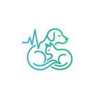

Terms of use
These terms are an agreement between you and LetsCalm LLC ("LetsCalm", "we", "us") about your use of the LetsCalm app. By installing or using the app you agree to them. If you do not agree, do not use the app. How we handle data is described separately in our privacy policy. Questions: admin@letscalm.com.
1. What LetsCalm is, and what it is not
LetsCalm listens through your device's microphone for animal vocalizations, estimates how the animal sounds, and can play calming audio or send you an alert. It does this with machine-learning models that run on your device.
- It is not veterinary or medical advice. Readings describe vocal patterns, not health or welfare. If you are worried about an animal, contact a veterinarian or qualified behaviorist.
- It is not a safety or emergency device. The app can miss sounds, misidentify species, misread mood, stop listening (for example when the phone is low on battery, out of memory, or when the operating system closes it), and alerts can be delayed or not delivered. Do not rely on it to protect an animal, a person, or property.
- Calming audio may not work. Animals respond differently, and some may not respond at all.
2. Who may use the app
You must be at least 13 years old to use the app, and at least 18 (or have the permission of a parent or guardian) to buy a subscription. You must use the app in compliance with the laws that apply to you.
3. Listening in your home: your responsibility
The app keeps the microphone open while it is monitoring. Audio is analyzed on the device and discarded; it is never recorded or uploaded (see the privacy policy). Even so, the microphone can pick up people nearby. You agree that:
- you will tell household members, guests, and anyone else who may be within range that an acoustic monitoring app is running, and keep the on-screen listening indicator visible where you can;
- you are responsible for complying with any law that requires the consent of people who may be overheard, including laws in states and countries that require the consent of everyone in a conversation;
- you will use the app to monitor animals, and will not use it to monitor, record, or eavesdrop on people.
4. Free and Premium
The free version of LetsCalm includes monitoring, live readings, and the daily weather report summary. LetsCalm Premium adds features such as automatic calming audio, your own recorded or uploaded calming audio, email alerts, Remote Monitor, and the hour-by-hour and moment detail in the weather report. The current list of Premium features is shown in the app before you subscribe. We may change which features are included, but we will not remove a Premium feature you are paying for during a billing period you have already paid for without offering a pro-rated refund where the law requires it.
Builds of the app distributed for beta testing (TestFlight and Google Play testing tracks) may include Premium features at no charge. That access ends when you stop using a beta build.
5. Subscriptions, free trials, and billing
- Who bills you. Premium is sold through the App Store (Apple) or Google Play (Google). Payment is charged to your Apple Account or Google Play account when you confirm the purchase. We never see your payment details. Apple's or Google's terms also apply to the purchase.
- Plans and prices. Premium is offered monthly and annually. The price, billing period, and any taxes are shown in the app and by Apple or Google before you confirm, in your local currency.
- Automatic renewal. Subscriptions renew automatically at the end of each billing period, at the then-current price, unless you cancel at least 24 hours before the end of the current period. Your account is charged for renewal within the 24 hours before the period ends.
- Free trials. Where a free trial is offered (for example, 7 days on the annual plan for new subscribers), it converts automatically to a paid subscription at the end of the trial unless you cancel at least 24 hours before it ends. Trials are limited to one per customer as determined by Apple or Google. If you cancel during a trial, Premium ends when the trial ends.
- Cancelling. You can cancel at any time. On iPhone and iPad: Settings › your name › Subscriptions. On Android: Google Play › Payments & subscriptions › Subscriptions. You can also open these from Settings › Subscription in the app. Deleting the app or your LetsCalm account does not cancel a subscription. After cancelling, Premium continues until the end of the period you have paid for.
- Refunds. Refunds are handled by Apple or Google under their policies; we cannot issue them directly. Except where the law requires otherwise, payments are not refundable for partial periods.
- Price changes. If the price of your plan changes, Apple or Google will notify you as their rules require, and where required you will be asked to accept the new price before it applies.
- Restoring purchases. If you change devices or reinstall the app, use Restore Purchases in the app, signed in to the same Apple or Google account. Signing in to a LetsCalm account lets a subscription follow you between devices.
6. Your licence to use the app
We grant you a personal, non-exclusive, non-transferable, revocable licence to use the app on devices you own or control, for your own non-commercial use, in line with these terms and the usage rules of the App Store or Google Play. You may not copy, modify, distribute, sell, or lease the app; reverse engineer it or try to extract its source code or machine-learning models, except where the law allows this despite this restriction; or use it to build a competing product. We and our licensors keep all rights not expressly granted to you. The app includes open-source software and models licensed under their own terms; see Settings › Data & Model Attribution.
7. Your content
Calming audio you record or choose stays on your device; we do not receive it. You are responsible for having the right to use any audio file you add. Feedback you send us may be used to improve LetsCalm without obligation to you.
8. Acceptable use
You agree not to misuse the app or our services, including by interfering with them, trying to access them by means other than the app, sending alerts to people who have not agreed to receive them, or using the app for anything unlawful.
9. Third-party services
The app relies on services from other companies, including Apple, Google (Google Play, Firebase), RevenueCat (subscription status), Vercel and SendGrid (alert emails), and Sentry (crash reports). Their availability is outside our control, and their own terms may apply. See the privacy policy for what each handles.
10. Changes to the app and these terms
We may update, change, or discontinue features of the app. We may update these terms; if a change is material, we will update the effective date above and tell you in the app or by email where we have one before it takes effect. If you keep using the app after the change takes effect, the updated terms apply. If you do not agree, stop using the app and cancel any subscription.
11. Ending your use
You can stop using the app at any time by uninstalling it and cancelling any subscription. We may suspend or end your access if you materially breach these terms. Sections 1, 3, 6 (restrictions), and 12 to 15 continue to apply after your use ends.
12. Disclaimer
To the extent permitted by law, the app is provided "as is" and "as available", without warranties of any kind, express or implied, including warranties of merchantability, fitness for a particular purpose, accuracy, and non-infringement. We do not warrant that the app will be uninterrupted, error-free, or that its readings will be accurate. Some jurisdictions do not allow these exclusions, so some of them may not apply to you.
13. Limitation of liability
To the extent permitted by law, LetsCalm LLC is not liable for any indirect, incidental, special, consequential, or punitive damages, or for any loss of data, injury to animals or people, or property damage arising from your use of or inability to use the app, including from missed or incorrect readings or alerts. Our total liability for any claim relating to the app is limited to the greater of the amount you paid us for Premium in the 12 months before the claim arose and US $50. Nothing in these terms limits liability that cannot be limited by law.
14. Governing law and disputes
These terms are governed by the laws of the State of Maryland, USA, without regard to its conflict-of-laws rules. Disputes will be heard in the state or federal courts located in Maryland, and you and we consent to their jurisdiction, except where the law of your country of residence gives you the right to bring a claim in your local courts. If you live in the European Union or United Kingdom, you also keep the protection of the mandatory consumer laws of your country.
15. Apple App Store terms
If you downloaded the app from Apple's App Store:
- These terms are between you and LetsCalm LLC only, not Apple. LetsCalm LLC, not Apple, is solely responsible for the app and its content.
- Your licence is limited to using the app on Apple-branded products you own or control, as permitted by the Usage Rules in the Apple Media Services Terms and Conditions, except that the app may be accessed by other accounts associated with you through Family Sharing or volume purchasing.
- Apple has no obligation to provide maintenance or support for the app.
- If the app fails to conform to any applicable warranty, you may notify Apple and Apple will refund the purchase price, if any; to the maximum extent permitted by law, Apple has no other warranty obligation regarding the app. Any other claims, losses, liabilities, damages, costs, or expenses attributable to a failure to conform to a warranty are LetsCalm LLC's responsibility.
- LetsCalm LLC, not Apple, is responsible for addressing any claims by you or a third party relating to the app or your possession or use of it, including product liability claims, claims that the app fails to meet legal or regulatory requirements, and consumer protection or privacy claims.
- If a third party claims that the app or your possession or use of it infringes their intellectual property rights, LetsCalm LLC, not Apple, is solely responsible for investigating, defending, settling, and discharging the claim.
- You represent that you are not located in a country subject to a U.S. Government embargo or designated as a "terrorist supporting" country, and that you are not on any U.S. Government list of prohibited or restricted parties.
- You must comply with applicable third-party terms when using the app.
- Apple and its subsidiaries are third-party beneficiaries of these terms and, once you accept them, Apple has the right to enforce them against you as a third-party beneficiary.
16. General
If any part of these terms is found unenforceable, the rest remains in effect. Our failure to enforce a provision is not a waiver. You may not transfer these terms; we may transfer them to a successor to the app. These terms, the privacy policy, and, for beta testers, the beta participation agreement are the whole agreement between you and us about the app.
17. Contact
LetsCalm LLC
306 W Redwood St #4755
Baltimore, MD 21201, USA
admin@letscalm.com